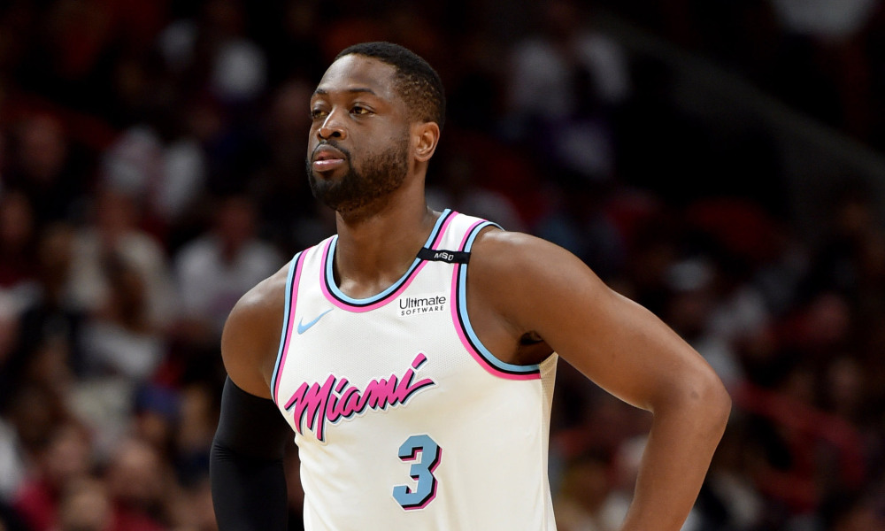
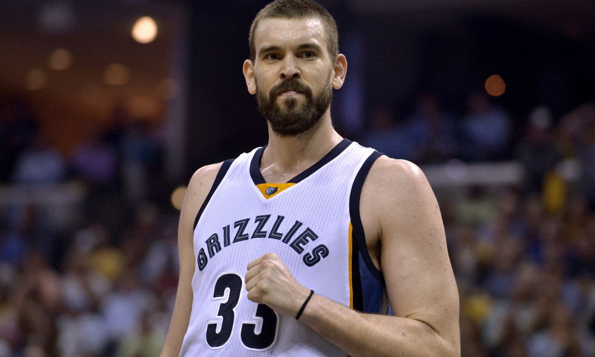
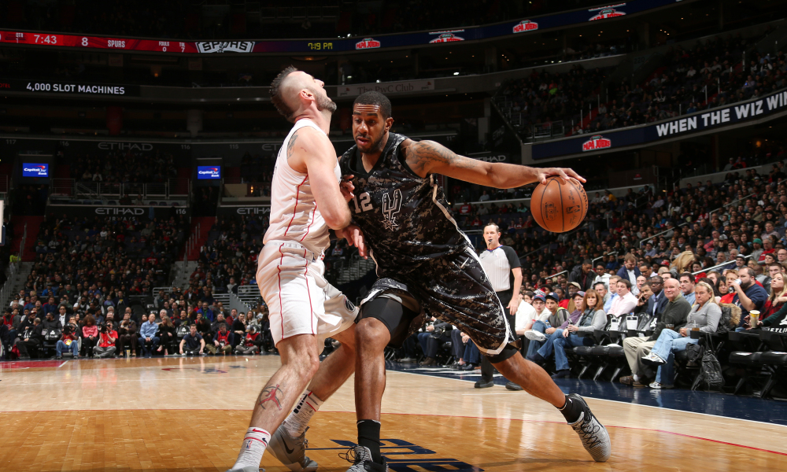

Game 1: Orlando Magic at Washington Wizards
My Pick:
Washington Wizards
Why I'm Rolling with them:
Game 2: Philadelphia 76ers at Miami Heat
My Pick:
Philadelphia 76ers
Why I'm Rolling with them:
Although Butler is still not playing tonight, this 76ers team is still capable of beating this Miami Heat team. I'll be interested to see the Philadelphia starting lineup tonight without Covington, as well as if Reddick is back in the starting lineup. If he is, count on him to have a great game, as Josh Richardson will be doing to much on the offensive end to be able to go all out defensively. Sixers take this one, 119-110.
 Dwyane Wade is playing great off the bench for this Heat teamGame 3: New Orleans Pelicans at Toronto Raptors
My Pick:
Toronto Raptors
Why I'm Rolling with them:
I think the Raptors are just the better team, and have the depth as well as talent to beat this Pelicans team pretty easily. Davis will still be a tough matchup for the Raptors, but the rest of this Pelicans team is outmatched. Siakam on Mirotic should be an interesting matchup, as the shooting of Mirotic will be matched with the speed and physicality of Siakam. Raptors win 120-112.
Game 4: Brooklyn Nets at Minnesota Timberwolves
My Pick:
Brooklyn Nets
Why I'm Rolling with them:
Wiggins is questionable for tonight's game, so a lot of my decision here hinges on that. I'm fairly confident that Covington isn't playing tonight, which means this Timberwolves roster is very depleted. Count on Derrick Rose to step up again alongside KAT to put big points on the board, but without so many key pieces of this roster I'm not sure how Minnesota can pull this one off. Brookly wins it 105-101.
Game 5: Utah Jazz at Memphis Grizzlies
My Pick:
Utah Jazz
Why I'm Rolling with them:
These teams have played twice so far this year, and both times Memphis has won. However, Donovan Mitchell is back and this Utah team looks to have figured out some of the early season woes that had been affecting them. I am excited to see how these two teams compete. Gasol and Conley will put up good numbers, but the interior presence of Gobert may make this harder for them. The Jazz take a close game, 100-97.
 Marc Gasol had a rough year last year, but he's bouncing backGame 6: Phoenix Suns at Oklahoma City Thunder
My Pick:
Oklahoma City Thunder
Why I'm Rolling with them:
The Oklahoma City Thunder struggled against the Mavericks two days ago, losing by 15 to a mediocre Dallas squad. The Thunder need more than 22 points from their bench unit in 80 minutes of play. Luckily, this weak Suns team should allow the OKC offense to get back on track, even with Westbrook out for tonight. The Thunder should have no problems dispatching the Suns, 110-103.
Game 7: Dallas Mavericks at Chicago Bulls
My Pick:
Dallas Mavericks
Why I'm Rolling with them:
Luka Donic is a star already, and now holds the record for most points scored through the first 12 games of someone's career. He looks very comfortable in this Dallas offense, and now that he's getting more touches he looks even better than before. Dallas should be able to beat Chicago easily, provided that Matthews can play a solid level of defense on LaVine. Dallas takes this one, 106-100.
Game 8: San Antonio Spurs at Sacramento Kings
My Pick:
San Antonio Spurs
Why I'm Rolling with them:
Both the Kings and the Spurs have exceeded expectations so far this season, with both DeRozan and Fox blossoming in their new roles. This Spurs team has looked good lately, beating the Rockets and holding them to just 89 points. This bodes well for their ability to handle the offensively gifted but defensively lacking Kings team. Spurs win, 115-111.
 Aldridge is having another fantastic season so farGame 9: Golden State Warriors at Los Angeles Clippers
My Pick:
Golden State Warriors
Why I'm Rolling with them:
Although Steph Curry is still out, Kevin Durant and Klay Thompson will be enough to deal with this Clippers team. Although the Clippers bench might be the best in the league, the Golden State trio should still be able to handle them pretty easily. Golden State's weakest position is probably center, which is good because that's probably the weakest Clipper postition too. Golden State, 118-110.